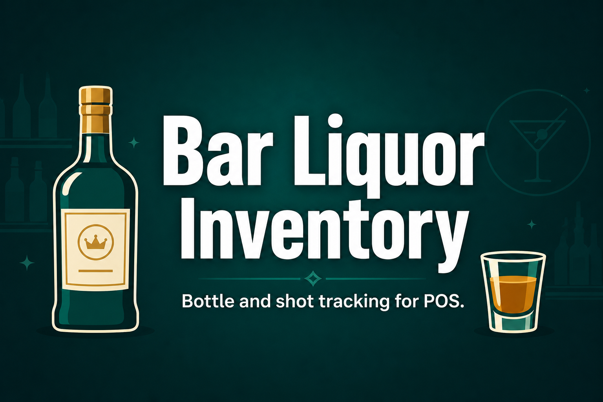

Bar Liquor Inventory
Track opened bottles and shot consumption in your bar POS
Built for bars and restaurants that sell liquor by the bottle and by the shot. Mark liquor products once, track sealed stock plus the active opened bottle balance in millilitres (ml), and let the POS automatically open bottles and deduct consumption when shot products are sold.